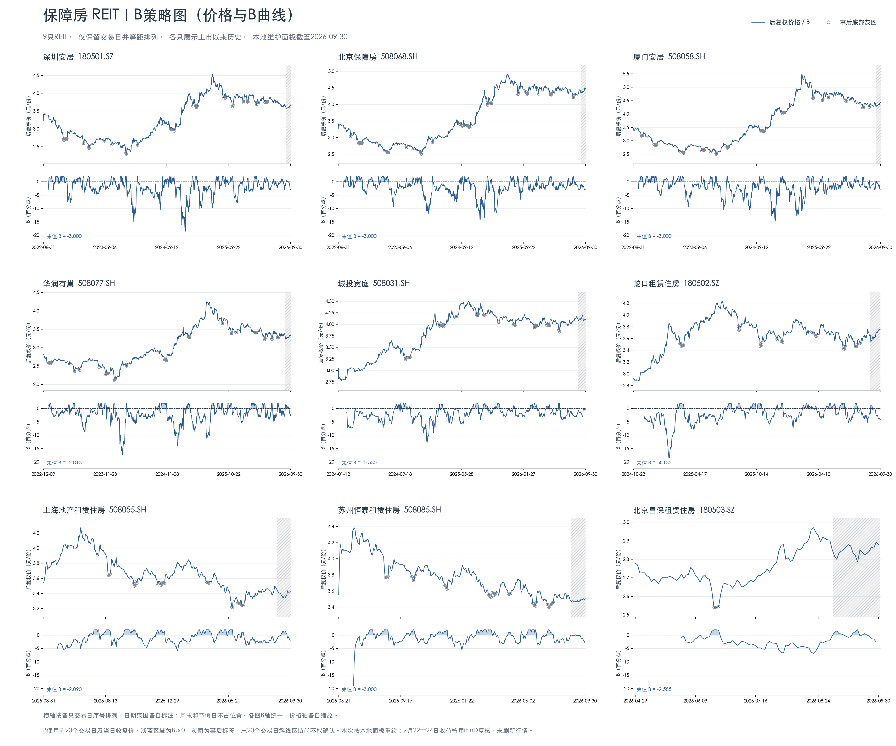

9只保障房REIT · B策略趋势
数据截至2026-09-30 · 后复权收盘价 · 横轴仅交易日
图表缩放下载 PNG ↓


点击缩放按钮后可滚动查看细节；手机上也可打开原图，用双指放大。
02 / HOUSING REIT B STRATEGY
九只保障房REIT合图，各自展示上市以来的价格与B曲线。
数据截至2026-09-30 · 后复权收盘价 · 横轴仅交易日

点击缩放按钮后可滚动查看细节；手机上也可打开原图，用双指放大。
180501.SZ508068.SH508058.SH508077.SH508031.SH180502.SZ508055.SH508085.SH180503.SZ